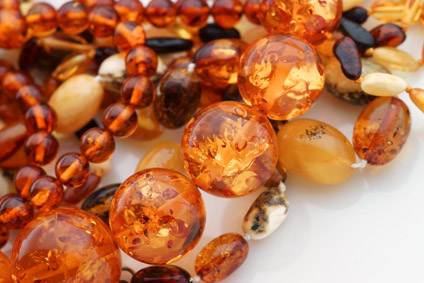

5 Common Misconceptions About Amber Teething Necklaces
You may have heard of amber teething necklaces from others or perhaps this is your first introduction to this natural alternative for relieving the discomfort of teething in babies. Whichever is the case, it is important for you to understand the true facts about amber teething jewelry and how they work.
1. Amber is a stone. Incorrect!
Although amber is found in the ground, it is not a stone or a mineral. Amber is fossilized resin. Amber is created from the pressure of the earth as it compresses the ancient forests that were buried millions of years ago. The resin from the trees is what creates amber and gives it its unique scent and variety of color shades. Baltic Amber, that considered the world’s finest, is 35 to 40millions years old. It’s always warm to touch and possesses electrostatic properties.
2. Amber teething necklaces are for chewing on. Incorrect!
Amber teething jewelry should be kept out of a child’s mouth. Unlike teething rings and other items that bring soothing to a teething child by chewing on them, amber teething necklaces are to be worn around the neck of the child and only when in adult supervision. Amber brings relief to inflamed gums and decreases drooling by releasing succinic acid through the child’s skin. The amber must be in contact with the child’s skin in order to be affective, but the necklace should not be long enough to be pulled into the child’s mouth.
3. Amber teething necklaces are a new idea. Incorrect!
In Europe families have been using amber teething necklaces for so long that it has become a tradition. The Celts, Romans, Greeks and Arabs all valued the healing properties of amber. Although they may not have understood how and why the amber brought healing to their bodies, they knew that the beautifully colored amber had unseen medicinal properties.
4. There is no scientific basis for using amber as a teething remedy. Incorrect!
Today, we know what ingredient in the amber has these healing properties and how it is transferred from the amber into our bodies. The ingredient which brings relief to teething babies is called succinic acid.It is transferred through the skin as the beads of the amber necklace are warmed by the body temperature of the child. Nobel prize winning scientist, Robert Koch, studied the properties of succinic acid and confirmed its positive traits. He also established its safety by determining that there was no danger of succinic acid building up within the body. Succinic acid is an FDA approved ingredient in many items you buy today. Baltic amber has been sold for years in pharmacies throughout Europe(particularly Germany, Switzerland and Australia) as a traditional safe remedy to assist with teething.
5. All amber has the same healing properties. Incorrect!
Fossilized resin can be found in many parts of the world, but it is only Baltic Amber, otherwise known as succinite, that contains the higher levels of succinic acid required for effective relief for teething symptoms. Different colors of the Baltic Amber are also said to have higher levels of succinic acid than others. Generally, it is the lighter colors of Baltic Amber that are preferred for use in amber teething necklaces.
In summary, amber teething necklaces have been used to bring relief to teething babies for centuries. Because the majority of amber in the world is found in the European region, Baltic Amber, that is where the practice originated. Baltic Amber is a fossilized resin that releases succinic acid into a child’s body when kept in contact with their warm skin. It is this safe and natural ingredient that brings relief for their teething symptoms. When shopping for amber teething necklaces, be sure to look for true Baltic Amber from a trusted source; an imitation amber teething necklace will certainly disappoint.